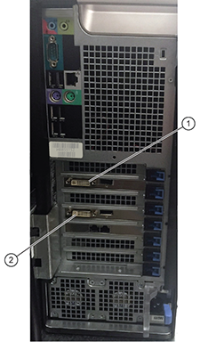
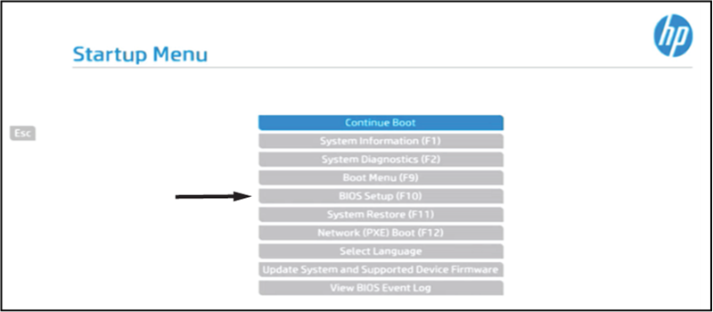
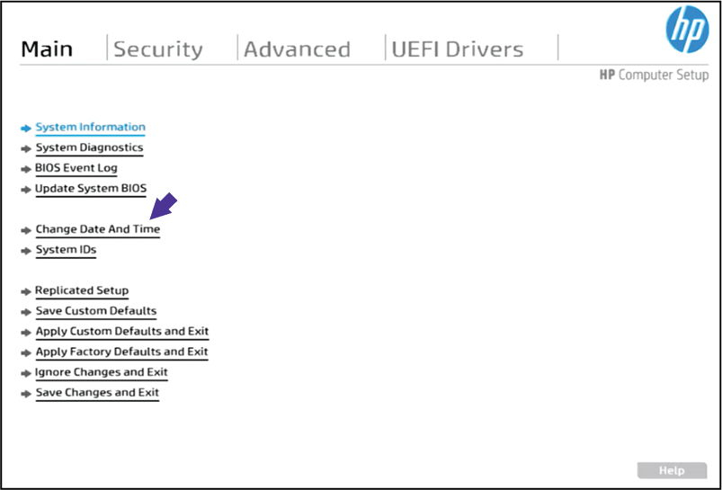

- Object ID: 00000018WIA302E7640GYZ
- Topic ID: id_2014625 Version: 4.32
- Date: Jul 28, 2025 5:27:51 PM
Setting up the BIOS for the host computer
Restore the BIOS configuration on the host computer.
About this task
Procedure
- (For Dell T5810) Disconnect the cable that connects to port 1, slot 2.
Figure 1. Dell T5810 cable connections 
- (For Dell T5810) Disconnect the cable that connects to port 1, slot 4. Connect the cable to port 1, slot 2.
- Power on the host computer, and then start to set up the BIOS.
- (For Dell T5810) During the host computer startup, press F2 when the Dell circle shows on the screen.
- (For Dell T5810) If a message indicates that the time of day is not set, press F2.
- Select General > Date/Time and set the correct time.
- Use the Tab key to move the cursor, and then use the left and right arrow keys to change the values.
Result
After you set the time and date, the BIOS settings open. Go to Step 9. - (For HP Z4 G5) During the host computer startup, press F10 to open the BIOS Setup menu when the HP startup logo shows on the screen.
Figure 2. HP startup logo The screen shows Entering Startup Menu . . . in the lower left corner.
Note Alternatively, press Esc to open the Startup Menu. Then select the BIOS Setup (F10) menu.Note If a screen with UEFI Firmware Settings opens instead of the Startup Menu, click UEFI Firmware Settings and press Enter.Figure 3. HP Z4 G5 Startup Menu 
The Main menu opens.
- (For HP Z4 G5) Under the Main Menu, select Change Date and Time.
Figure 4. HP Z4 G5 Main Menu under BIOS Setup 
- Set the correct time and date.
Result
After you set the time and date, the BIOS settings open. Go to Step 9. - Restore the customized BIOS settings. Change only the values specified below.
- (For Dell T5810) See Dell T5810 Customized BIOS settings.
- (For HP Z4 G5) See HP Z4 G5 Customized BIOS settings.
Table 1. (For Dell T5810) Customized BIOS settings Section Subsection Setting General General Boot Sequence Diskette Drive - Disabled Diskette Drive - disabled USB Storage Device - disabled Boot Order: ODD, SSD, SSD System Configuration SATA Operation AHCI enabled Memory Map IO Memory Map - enabled Performance Intel SpeedStep Enable Intel SpeedStep - disabled c-States c-States - disabled Dell Reliable Memory Technology Enable Dell RMT - disabled Virtualization Support Virtualization Enable Intel Virtualization - disabled VT for Direct IO Enable VT for Direct IO - disabled Power Management AC Recovery Power On Table 2. (For HP Z4 G5) Customized BIOS settings Section Subsection Item Setting Note For more detailed information about the BIOS settings for the HP Z4 G5 host PC, see System BIOS settings for HP Z4 G5.Security Security Configuration > TPM Embedded Security TPM Activation Policy No Prompts Security Configuration > BIOS Sure Start Virtualization Based BIOS Protection Disable Security Configuration > System Security Virtualization Technology (VTx) Disable Virtualization Technology for Directed I/O (VTd) Disable Trusted Execution Technology (TX) Disable DMA Protection Disable Security Configuration > Secure Platform Management (SPM) HP Cloud Managed Disable Remote Device Management Disable Advanced Boot Option Fast Boot Enable Network (PXE) Boot Disable After Power Loss Power On UEFI Boot Order M.2 SSD0 USB
New Mass Storage
HP Sure Recover HP Sure Recover Disable System Option SATA Controller Disable (Enable) SATA Controller RAID Mode Disable (Enable) Reset Factory Defaults on Battery Loss Do Not Apply Default Settings HP Application Driver Disable Build-In Device Option Wake On LAN Disable (Boot to Hard Drive) Port Option SATA 0 Disable SATA 1 Disable SATA 2 Disable SATA 3 Disable SATA 4 Disable Power Management Option Runtime Power Management Enable Hardware P-States Disable BIOS Energy/Performance Bias Performance S4/S5 Maximum Power Savings Disable SATA Power Management Disable (Enable) - Click Apply.
- Click Exit.
Result
The system restarts. The BIOS configuration is complete.
Finalization
- Power off the host computer.
- (For Dell T5810) Disconnect the cable that was previously connected to port 1, slot 2.
- (For Dell T5810) Reconnect the cables.
- Reconnect the IRD cable to port 1, slot 2.
- Reconnect the host LCD monitor cable to port 1, slot 4.
- Power on the host computer (see Starting up the host computer), and make sure that the LCD is on.